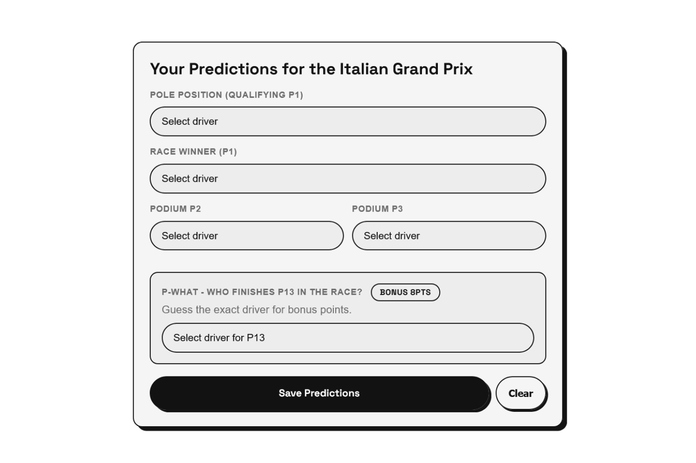
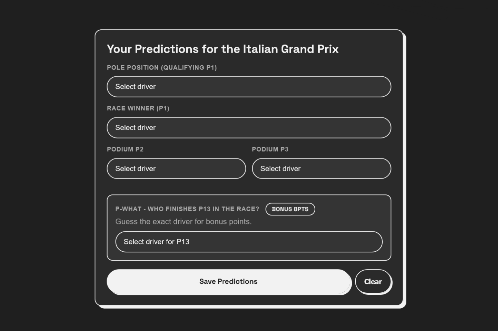

F1 Weekend Predictor
A vanilla HTML/CSS/JS prediction game for Formula 1 weekends. Pick pole, podium,
winner and a wildcard for each Grand Prix and see how you score once results are in — static site, no
backend.


Project Details / Background
There is this F1 content creator on Youtube who has this segment where they try
and predict the result of the upcoming F1 Grand Prix. They also have this kind of mini championship
amongst themselves where who predicted better gets more points. So I thought of making it into a
simple app that can fetch the real F1 result while also calculating your prediction score.
Tech: HTML (tabs: Play / Your Predictions / Standings / Past
Results), CSS (vars
--bg-color / --surface / --border-color +
Space Grotesk), vanilla JS (index.html + style.css + script.js, no build).
Data from Jolpica Ergast (schedule, standings,
race/qualifying/sprint results) + OpenF1 (sessions, driver
headshots/team colours, team logos with overrides for HAD/LIN/TSU/BOT/PER) — cached in
localStorage (cache:* with TTLs per type: standings 15m, schedule 1h,
results 10m, sessions 5m, media 6h) so GitHub Pages stays functional without a server. Stale cache
is served on fetch failure. Predictions stored as f1predict:{season}:{round} and
auto-scored post-race.
Scoring: Pole 5, Win 10, Podium exact 5 / wrong slot 2, Wildcard
8, Sprint Pole 3 / Sprint Win 5 — adjustable in
script.js:SCORING. Duplicate check on
Winner/P2/P3 (pole may overlap).What I learned: Countdown can't just count to the race — it has
to walk the whole weekend. I fetch OpenF1
sessions?year= and fall back to Jolpica dates
via buildFallbackSessions() if OpenF1 is down, then render
Next: FP2 / Now: FP3 / LIVE with getTimeLeft() ticking every second.
Biggest gotcha was data freshness on a static host — hence TTL'd cache + serving stale on failure —
and mapping 22 drivers (2026 grid) with fallback initials/logos when media.formula1.com
404s.
Next: Shareable prediction card, round-to-round points chart,
and optional PWA offline cache for schedule/standings.
Features